Снимок сверху сделан 13 мая в 09:03. Запомните время. Через 12 часов 21 минуту я буду лежать вот здесь.
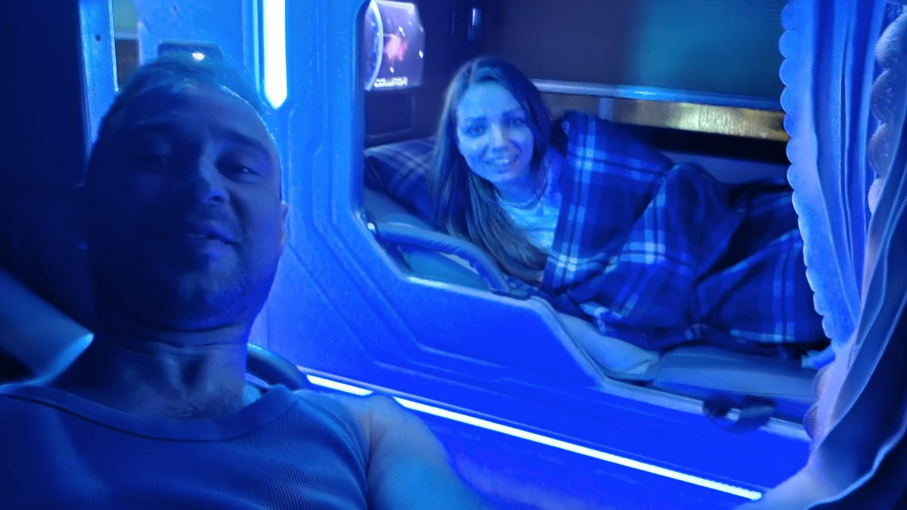
13.05.26 21:24Это спальный автобус. Вместо кресел в нём капсулы с неоновой подсветкой, вместо ремня безопасности клетчатый плед. Впереди больше пятисот километров на север. План простой: ночь туда, день там, ночь обратно. Гостиницу в Дананге мы не бронировали, потому что спать в нём не собирались.
Всё это ради моста, который держат две каменные ладони. Вы его видели, он есть у всех. Сколько времени мы на нём провели, я узнала уже дома, когда сверяла время на снимках. Цифру назову ниже, но сначала вам придётся её угадать.
Что выяснится по дороге
- Что исчезло из нашего чемодана в Гуанчжоу
- Кто спал на столе посреди кофейной фермы
- Сколько минут длилось то, ради чего мы ехали две ночи
А пока отмотаю на четыре дня назад. Там стоит чемодан, и в нём лежит записка не от нас.
Записка в чемодане
Летели мы через Китай. Чемодан сдали в Шереметьеве вечером 8 мая и снова увидели уже во Вьетнаме, на следующий день. Вечером в номере мы его открыли. Поверх вещей лежал голубой бланк с иероглифами.
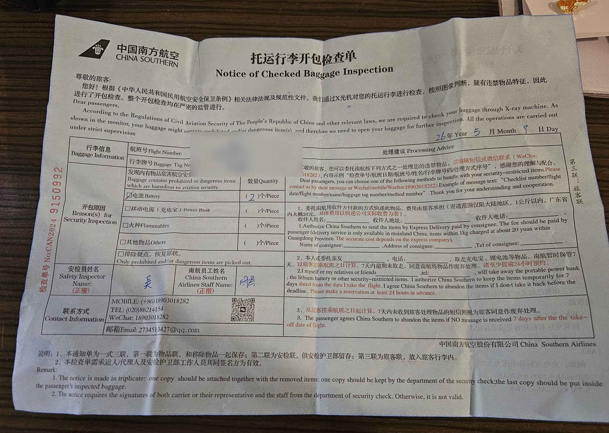
09.05.26 20:35«Уведомление о досмотре зарегистрированного багажа». Перевожу с канцелярского: пока мы пересаживались в Гуанчжоу, чемодан просветили, открыли и вынули из него две батарейки. Оформлено безупречно. Дата, подпись инспектора, подпись сотрудника авиакомпании и отдельный лист с правилами перевозки пауэрбанков, где приведена формула пересчёта миллиампер-часов в ватт-часы.
Я была готова к потерянному багажу, к разбитому колесу, к чужому чемодану на ленте. К тому, что нас обыщут и вежливо оставят записку с формулой, меня не готовил никто.
Если летите через Китай, всё, в чём есть литий, кладите в ручную кладь. Иначе вам тоже напишут.
Вопрос 1 закрыт: две батарейки
Остров, над которым я летала
На остров Хон Че из Нячанга едут по воздуху. Канатная дорога тянется над морем больше трёх километров. На острове стоит парк VinWonders: зоопарк, аквапарк, сад кактусов и замок. Мне хватило бы одного троса.
Со стороны кажется, что я раскинула руки от восторга. На самом деле я проверяю, держит ли страховка.
Вечером замок подсветили, над ним запустили фейерверк, и мы сняли кадр, который обязан быть в любом рассказе о поездке вдвоём.
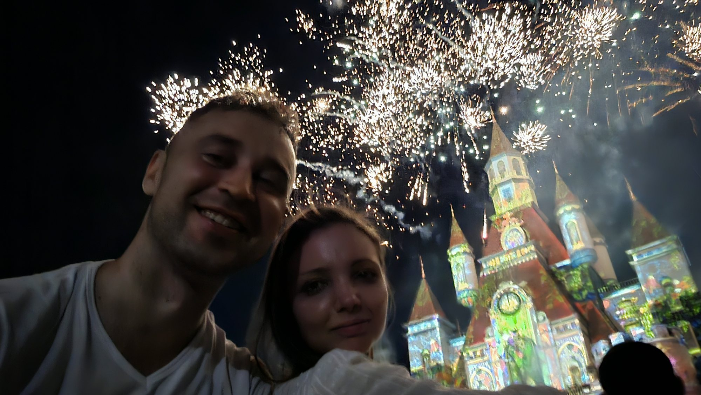
10.05.26 20:08На этом романтика заканчивается. Дальше горы, черти и зверь, которого я не смогла опознать.
Пять остановок до заката
В шесть утра мы уже были в дороге. К семи автобус полз по горному перевалу, к половине девятого привёз нас в город, куда вьетнамцы уезжают от жары, а французы сто лет назад уезжали от вьетнамской жары.
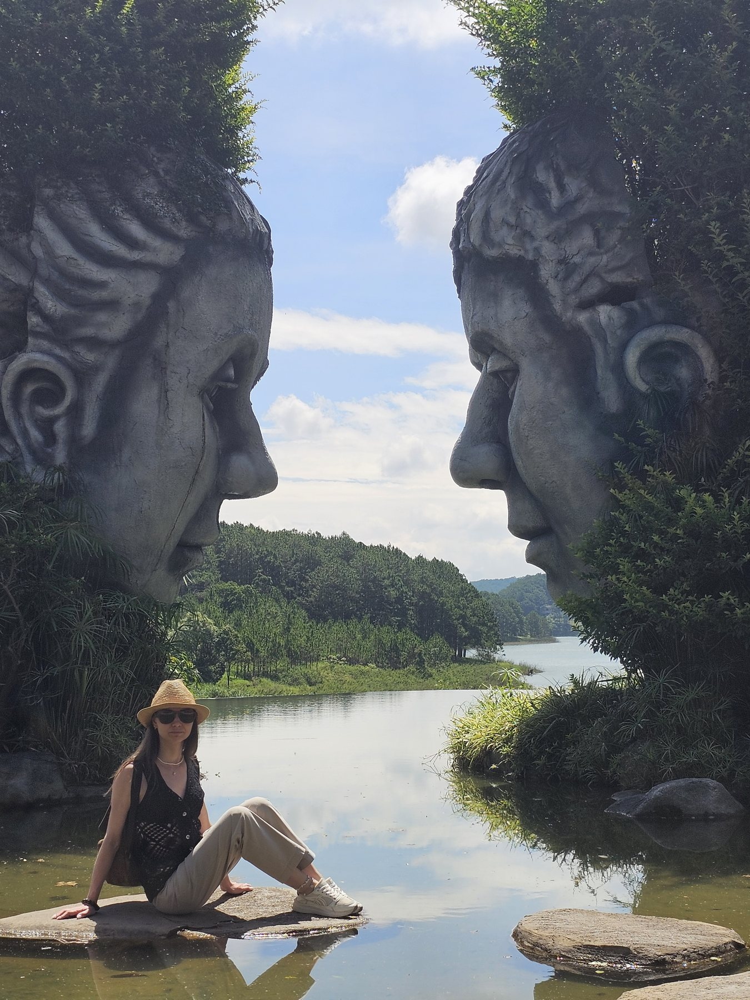
11.05.26 09:45Первая остановка — парк скульптур у озера Туенлам. Две головы размером с дом смотрят друг на друга через воду. Между ними как раз помещается один человек, и очередь из таких людей стоит на берегу.
Вторая — «Сумасшедший дом», гостиница без единого прямого угла. О ней расскажу отдельно, иначе мы отсюда не уедем.
Третья — кофейная ферма. Нам показали, как сушат зёрна, и подвели к длинному деревянному столу. На столе спал зверь.
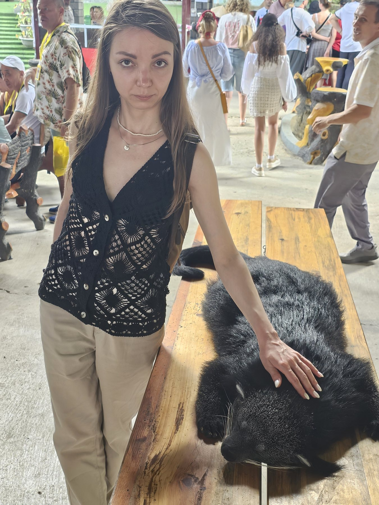
11.05.26 13:01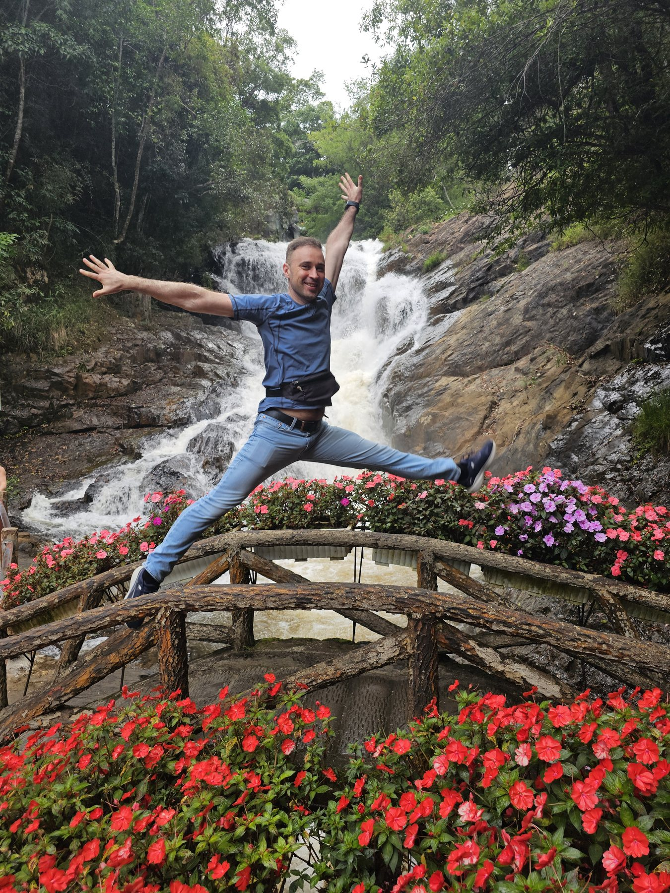
Руки Серёжи: 1 11.05.26 14:34Это бинтуронг. По-английски bearcat, «медвекот», хотя он не медведь и не кот, а родственник циветт. Про бинтуронгов пишут, что они пахнут попкорном. Проверять я не стала.
Вопрос 2 закрыт: бинтуронг
Четвёртая остановка — водопад Датанла, и здесь нужно объяснить одну вещь про Серёжу. Когда он видит красивое место, он раскидывает руки. Иногда вместе с ногами. Я завела счётчик, следите за ним.
Пятая — пагода Линь Фуок, целиком выложенная мозаикой из битой посуды. Под ней устроен ад: тёмный коридор, красный свет, грешники и черти со светящимися глазами. Наверху, уже на солнце, мы вытянули предсказание. Номер 72, «trung kiết». Переводчик утверждает, что это «средняя удача».
Запомните эту бумажку. Она сработает через три дня, в 14:48.
Сутки без плана
После Далата мы сдались и на сутки переехали в отель на северном краю залива. Там есть бассейн, вода в котором обрывается прямо в море. Кадр из самого начала снят в нём. Ещё я лежала на этой воде звездой и собиралась так провести остаток отпуска.
Утром Серёжа надел вьетнамскую шляпу, встал на одну ногу и сложил ладони перед грудью. Руки он при этом не раскинул, поэтому в счётчик поза не идёт.
В полдень мы выехали из отеля. В четыре бродили между кирпичными башнями Понагар, которым больше тысячи лет. В 21:24 я лежала в автобусе под клетчатым пледом. Этот кадр вы уже видели.
Две ночи ради моста
Про ночь в автобусе скажу одно. В 05:11 я снимала через стекло пустую улицу незнакомого города, а так выспавшиеся люди себя не ведут.
В 09:21 мы стояли у канатной дороги Ба На Хиллз. Наверху, на высоте около 1400 метров, построили французскую деревню, замок, сады и его. Золотой мост, сто пятьдесят метров дуги на двух каменных ладонях.
Последнее видео с моста записано в 11:28. На каждую минуту на мосту пришёлся примерно час в автобусе.
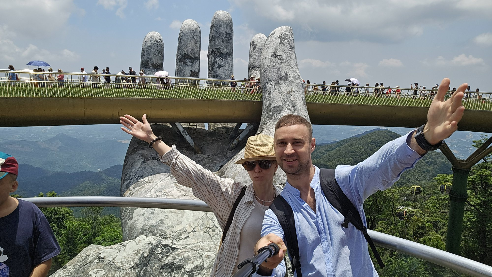
Руки Серёжи: 2 14.05.26 11:14Вопрос 3 закрыт: двадцать минут
Теперь честно. На открытках мост пустой и плывёт в облаках. В жизни по нему движется плотная колонна людей с зонтиками от солнца, и снять ладони без чужих голов можно только сбоку, с соседней площадки. Жалею ли я о поездке? Ни об одной минуте из двадцати.
В 14:48 сработало предсказание номер 72. Мы сидели на площади, где шёл фестиваль крафтового пива, и небо упало.
Ливень в горах не начинается. Он включается. За минуту площадь опустела, по столам застучало так, что не слышно соседа, а мои белые брюки стали брюками в горошек.
Удача и правда оказалась средней. Дождь пришёл через три часа после моста, а мог бы прийти вместо него.
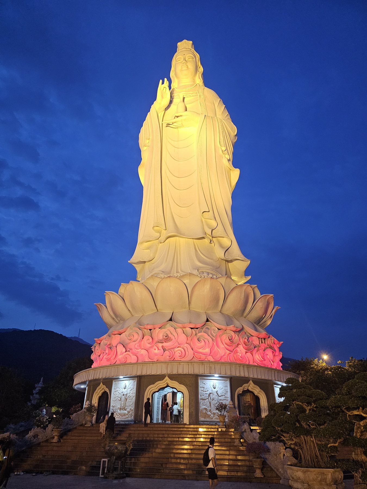
14.05.26 18:26К вечеру мы спустились к морю. На полуострове Сонча стоит Леди Будда, 67 метров высоты. В сумерках её подсвечивают, и небо за ней становится того самого синего цвета, что и свет в нашем автобусе.
У соседнего здания, прямо над табличкой «Restricted area. Please do not enter», спала рыжая собака. Ей было можно.
Потом мы снова легли в капсулы. В 06:26 утра я сфотографировала знакомую улицу Нячанга. Две ночи, один день, один мост.
Сорок этажей под ногами
Нормальные люди после двух ночей в автобусе спят. Мы в одиннадцать утра поднимались по лестнице к белому Будде пагоды Лонг Шон, через полчаса стояли у каменного собора, а на закате оказались на крыше.
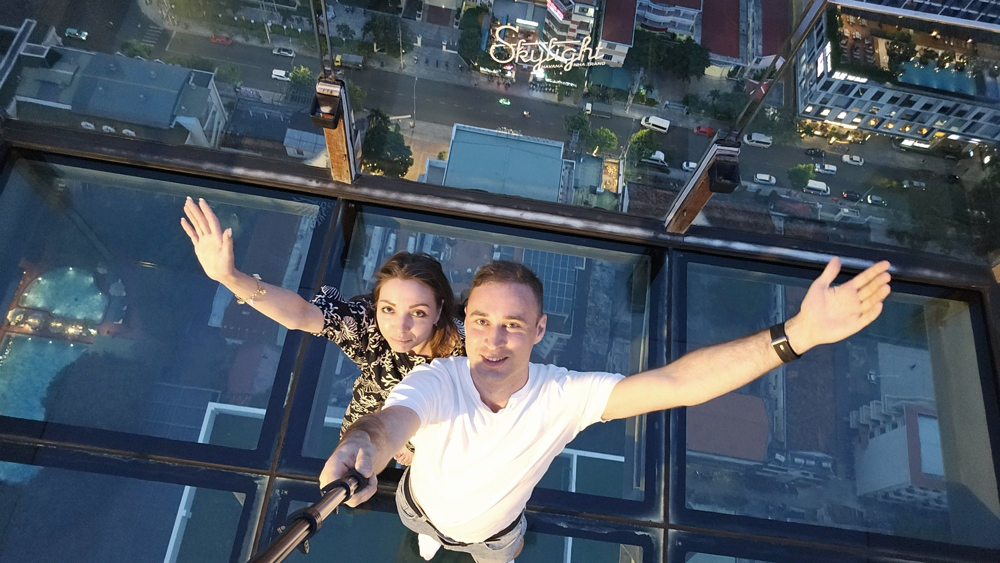
Руки Серёжи: 3 15.05.26 18:02Часть пола там сделана из стекла. Серёжа встал на него и сделал то, что делает всегда. Я тоже подняла руку, но по другой причине: держалась за воздух.
Счётчик на этом останавливаю. В архиве раскинутых рук гораздо больше, но у меня лимит, пятнадцать кадров на выпуск.
Полтора дня на сдачу
Обратный рейс снова шёл через Гуанчжоу, и на этот раз мы вышли в город. Пересадка длиной в полтора дня. Для Китая это ничто, для одного зоопарка в самый раз.
В сафари-парке «Чимелонг» мы провели семь часов, с десяти утра до пяти вечера. Больше всего я ждала встречи с большой пандой. Думала, она будет жевать бамбук или хотя бы сидеть.
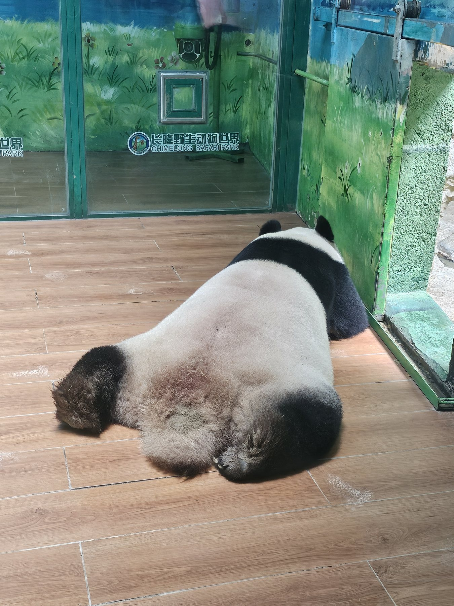
17.05.26 13:30Панда лежала лицом в пол и не шевелилась. Мы постояли рядом из солидарности. Через тринадцать минут меня окружили олени, и я подняла корм над головой, как поднимают руки при ограблении.
А ещё там взвешивают коал. Коала обнимает палку, палку подвешивают к весам, и зверь висит с выражением человека, которого разбудили в шесть утра. Это видео я приберегла.
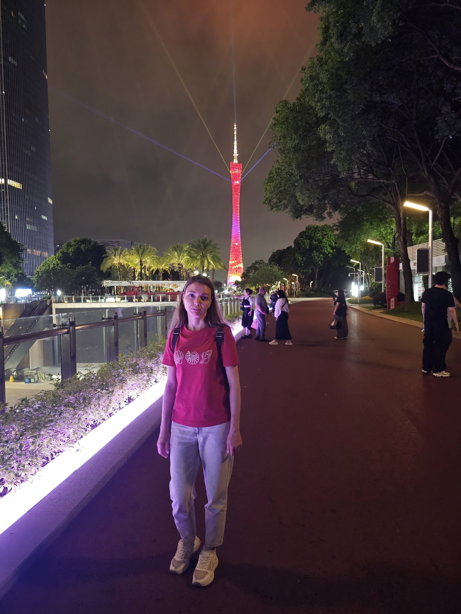
17.05.26 22:54Вечером мы дошли до Кантонской башни. Она переливается, из её вершины бьют лучи, по набережной гуляет полгорода.
Посмотрите на моё лицо на этом снимке. Так выглядит человек, у которого было десять дней отпуска и ровно сутки отдыха.
Счёт
- Ночей в поездке
- 10
- Из них в автобусе
- 2
- Минут на Золотом мосту
- 20
- Батареек изъято
- 2
- Предсказаний сбылось
- 1 из 1
- Панд, которым было не до нас
- 1
- Фото и видео в телефоне
- 1316 + 138
- Показано вам
- 15
Мост занял двадцать минут из десяти дней. Но когда меня спрашивают про Вьетнам, первым я вспоминаю не его. Я вспоминаю синий свет в автобусе, клетчатый плед и Серёжу, который снимает нас через проход, пока я делаю вид, что мне удобно.
Теперь вопрос к вам. Две ночи дороги ради двадцати минут: вы бы поехали? Расскажите в комментариях про самое невыгодное по времени решение в путешествии, о котором вы не пожалели.
В следующем выпуске Гуанчжоу целиком. У меня оттуда 76 видео, и коала на весах ждёт своего часа.